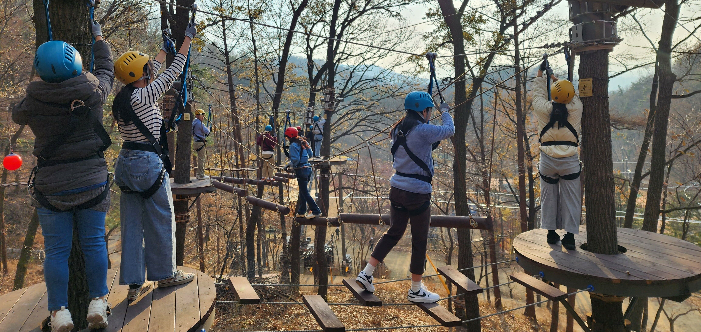
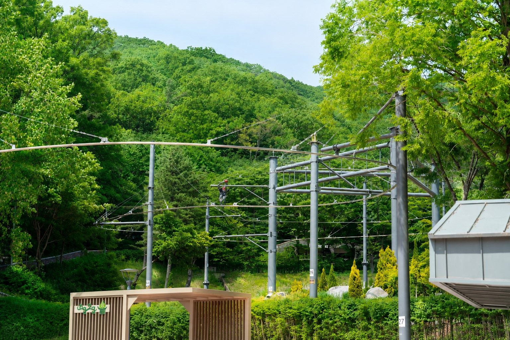
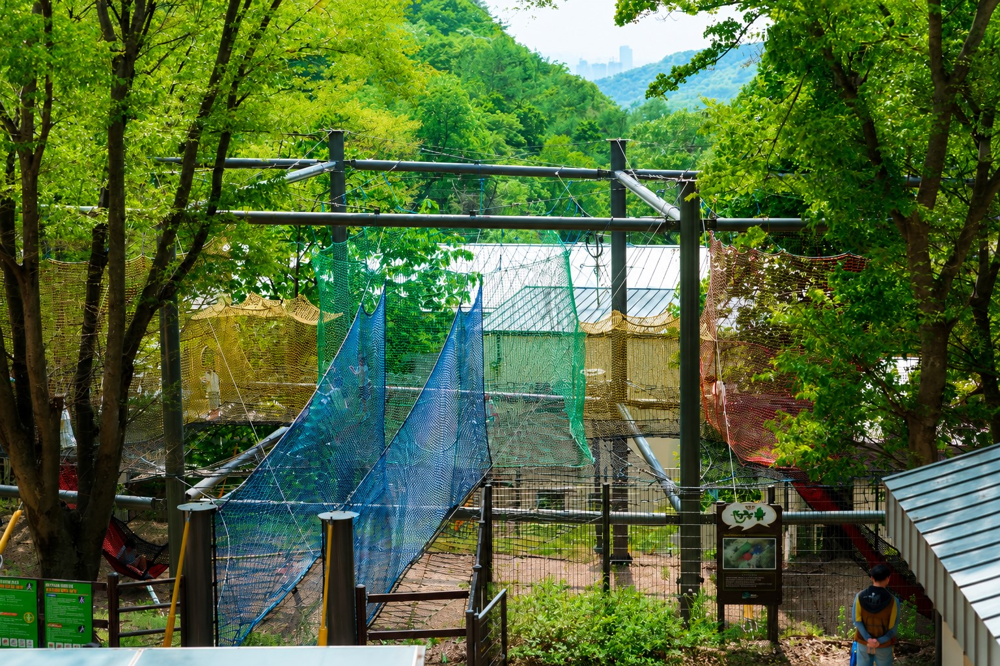
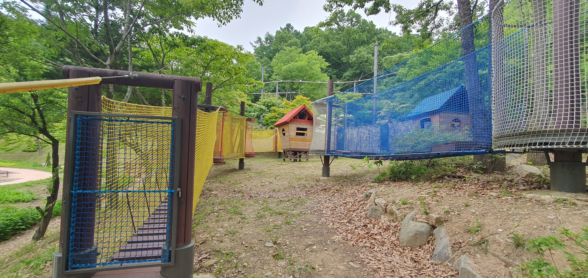
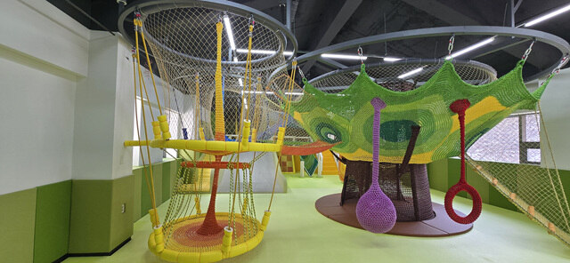

📌 운영 안내
- 🕙 운영시간 : 10:00 AM ~ 05:30 PM
- 🚫 휴장일 : 매주 화요일
- 🌦 기상상황 및 운영여건에 따라 운영시간이 변경될 수 있습니다.

🌲 자연과 함께하는 산림레포츠
태조산 산림레포츠단지는 숲속 자연환경을 활용하여 다양한 체험과 휴식을 함께 즐길 수 있는 복합 레포츠 공간입니다.
🎫 통합권
짚코스터, 공중네트, 숲모험을 하나의 이용권으로 체험할 수 있습니다.
- 💰 이용요금 : 12,000원
- 👤 이용대상 : 청소년·성인
- 📏 신장 : 160~190cm
- ⚖️ 체중 : 45~90kg
- 🦺 50kg 미만 이용자는 중량조끼 착용 (현장 제공)
- ⚠️ 만 70세 이상 고위험 이용자는 입장이 제한될 수 있습니다.
🎯 권장 이용 순서
숲모험 → 짚코스터 → 공중네트

🌲 숲모험
숲속 나무와 다양한 체험시설을 연결하여 자연 속에서 직접 이동하고 체험할 수 있는 어드벤처형 산림체험시설입니다.
- 💰 이용요금 : 7,000원
- 👤 이용대상 : 청소년·성인
- 📏 신장 : 150~190cm
- ⭐ 권장 신장 : 160cm 이상
- ⚖️ 체중 : 45~90kg
- 🎟 발권마감 : 이용 40분 전
※ 신장·체중 조건을 모두 충족해야 체험이 가능합니다.

🚡 짚코스터
숲속을 가로지르는 활강시설로 자연의 풍경과 스릴을 함께 즐길 수 있습니다.
- 💰 이용요금 : 7,000원
- 📏 신장 : 150cm 이상
- ⚖️ 체중 : 45~90kg
- 🦺 50kg 미만 이용자는 중량조끼 착용 (현장 제공)
- 🎟 발권마감 : 이용 10분 전
- ⚠️ 만 70세 이상 고위험 이용자는 입장이 제한될 수 있습니다.
※ 신장·체중 조건을 모두 충족해야 체험이 가능합니다.

🕸 공중네트
여러 개의 네트가 연결된 공간에서 자유롭게 뛰고 오르며 즐기는 체험시설입니다.
청소년·성인
- 💰 이용요금 : 5,000원
- 📏 신장 : 120cm 이상
- ⚖️ 체중 : 90kg 이하
어린이
- 💰 이용요금 : 3,000원
- 👧 연령 : 만 5~11세
- 📏 신장 120cm 미만은 보호자 동반 시 이용 가능
※ 신장·체중 조건을 충족해야 체험이 가능합니다.

🧒 어린이 숲모험
어린이가 숲속에서 다양한 체험시설을 안전하게 경험할 수 있는 어린이 전용 체험공간입니다.
- 🎒 이용대상 : 초등학교 1학년 이상 ~ 6학년 이하
- 💰 이용요금 : 무료개방

🛝 키즈놀이터
어린이가 자유롭게 뛰어놀며 다양한 놀이를 즐길 수 있는 어린이 전용 실내 놀이공간입니다.
- 👶 이용대상 : 만 3~5세
- 💰 이용요금 : 무료
- 🧦 양말 착용 필수
- 👨👩👧 보호자 동반 필수
⚠ 이용객 준수사항
🚫 이용이 제한되는 경우
- 고소공포증, 공황장애
- 임산부
- 음주자
- 최근 수술 이력 (1개월 이내)
- 심혈관질환 및 근골격계질환 (디스크, 골절 등)
- 기타 안내원의 안전 지시사항을 위반하는 경우
👕 복장 안내
- 치마, 슬리퍼, 구두, 크록스, 샌들 착용 제한
- 장신구 및 긴 손톱 등 위험요인 발생 가능 복장 제한
- 긴팔 및 긴바지 착용 권장
- 긴 머리는 머리끈 착용 권장
- 🧦 양말 착용